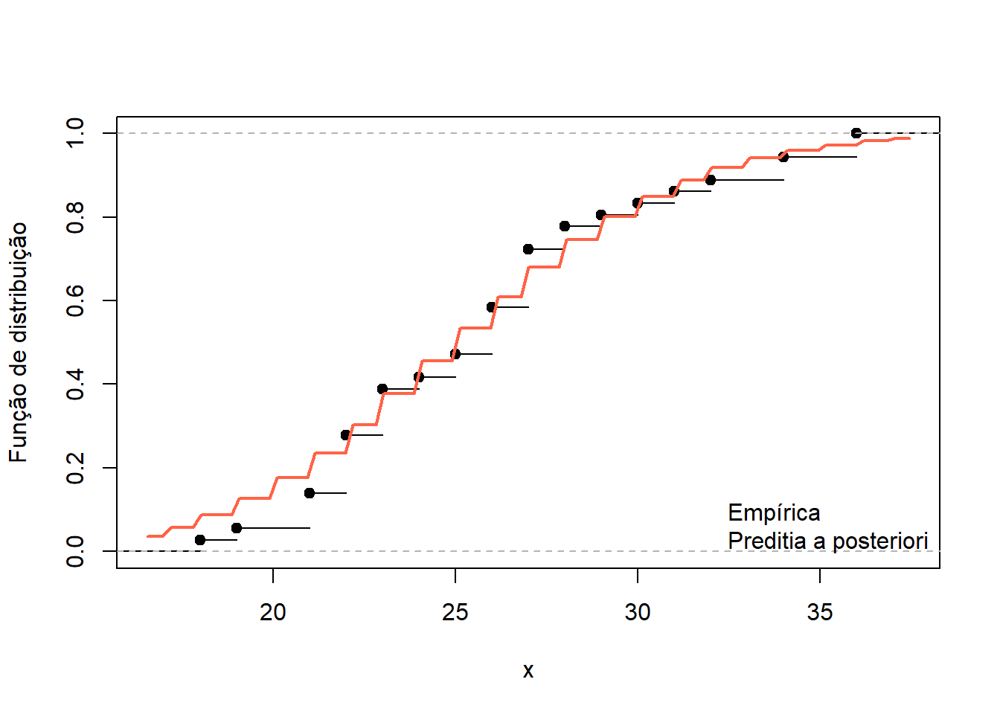

Seja \(N(t)\) o número de ocorrências observadas no intervalo de tempo \([0,t]\) (considere que \(N(0)=0\)). Note que o número de eventos no intervalo \((s,t]\) é dado por \(N(t)-N(s)\).
Dizemos que \(N(t)\) tem incrementos independentes se, para quaisquer intervalos disjuntos \((s_0,t_0]\) e \((s_1,t_1]\), as contagens \(N(t_0)-N(s_0)\) e \(N(t_1)-N(s_1)\) são independentes.
\(N(t)\) é denominado Processo de Poisson quando ele possui incrementos indepentes e, para qualquer intervalo \((s,t]\),
\[P(N(t)-N(s)=x)=\frac{e^{-\lambda(t-s)[\lambda(t-s)]^x}}{x!},\] onde \(x=0,1,\ldots\) e \(\lambda>0\). Isto implica que \[E(N(t))=\lambda t,\] ou seja, o número esperado de ocorrências até o tempo \(t\) é diretamente proporcional à \(t\) e \(\lambda\) representa a taxa de crescimento. Para este processo, é verdade que \[\lim_{\delta\rightarrow 0}P(N(t+\delta)-N(t)>1)=0,\] ou seja, não é possível observar duas ou mais ocorrências simultaneamente.
Em geral, os experimentos são desenhados para registrar contagens em intervalos regulares e disjuntos de tempo, como semanas ou anos. Considere que tais intervalos são \([0,s_1],(s_1,s_2],\ldots,(s_{n-1},t]\) e seja \(c\) o comprimento destes intervalos. Em geral, os dados são apresentados como contagens dentro destes intevalos, gerando as seguintes variáveis:
\(X_n=N(t)-N(s_{n-1})\sim\hbox{Poisson}(\lambda c)\) ou seja, \(X_1,\ldots,X_n\) são uma amostra aleatória do modelo Poisson(\(\lambda c\)). Na prática, \(c=1\) por ser a unidade de medida de tempo associada ao experimento (uma semana, um ano, etc).
7.1.1 Tempos de chegadas e tempos de espera
Para um processo de Poisson \(N(t)\), definimos o tempo de chegadas como o tempo entre duas observações consecutivas. Denotaremos o tempo de chegadas entre a \(i\)-ésima e a \(i-1\) ésima ocorrência por \(T_i\).
É possível mostrar que \(T_i\) é independente de \(T_j\), para \(i\neq j\) e que \(T_i\sim\hbox{Exponencial}(\lambda)\). Por isso, para uma amostra aleatória de um modelo Exponencial(\(\lambda\)), o parâmetro \(\lambda\) é demoninado taxa.
Definimos por tempo de espera da ocorrência \(n\) como o tempo transcorrido desde o início do processo até a ocorrência do \(n\)-ésimo evento. Este tempo de espera é denotado por \(S_n\). Exsitem dois resultados importantes relacionados ao tempo de espera:
\(S_n=T_1+\cdots+T_n\) tem distribuição Gama(\(n,\lambda\))
Dado que \(N(t)=n\), os tempos de espera dos eventos estão uniformemente distribuídos dentro do intervalo \((0,t)\).
7.1.2 Ocorrências de diversas classes
Suponha que as ocorrências observadas podem ser classificadas em \(k\) categorias. Suponha que qualquer ocorrência tem probabilidade \(p_j\) de pertencer a categoria \(j\). Então
O número de ocorrências da classe \(j\) é um processo de Poisson com taxa \(\lambda p_j\)
O número de ocorrências da classe \(j\) é independente do número de ocorrências da classe \(i\), com \(i\neq j\)
7.1.3 O processo de Poisson Espacial
Seja \(N(A)\) o número de ocorrências observadas em uma região de área \(A\). \(N(A)\) é denominado Processo de Poisson Espacial quando \(N(A)\sim\hbox{Poisson}(\lambda A)\) e, para duas regiões distintas de áreas \(B\) e \(C\), \(N(B)\) e \(N(C)\) são independentes.
Note que, para um Processo de Poisson Espaical, dado \(N(A)=n\) as \(n\) ocorrências estão uniformemente distribuídas dentro da região \(A\)
7.2 Verossimilhança e priori conjugada
Seja \(X_1,\ldots,X_n\) uma amostra aleatória do modelo Poisson\((\lambda)\). A verossimilhança deste modelo é dada por
\[L(\theta)=\frac{e^{-n\theta}\theta^{\sum_{i=1}^{n}x_i}}{\prod_{i=1}^{n}x_i!}\propto \theta^{\sum_{i=1}^n x_i}e^{-n\theta}.\] O modelo Poisson pertence à família exponencial e sua priori conjugada é \(\theta\sim\hbox{Gama}(r,s)\) e a posteriori é \(\hbox{Gama}(r+\sum_{i=1}^n x_i+r, s+n)\), conforme já discutido na Introdução. Os hiperparâmetros \(r\) e \(s\) podem ser interpretados como o total da contagem e o tamanho da amostra a priori.
A média da posteriori é \[E(\theta|\mathbf{x})=\frac{\sum_{i=1}^{n}x_i+r}{n+s}=\frac{n}{n+s}\bar{x}+\frac{s}{n+s}E(\theta),\] onde fica claro que este estimador é uma média ponderada das informações provenientes das duas fontes de informação (sendo \(\bar{x}\) a estimativa de máxima verossimilhança e \(E(\theta)\) a média a priori).
Se \(n\gg s\), então a média a posteriori dará maior peso para a informação dos dados.
7.3 Preditiva a posteriori
A inferência bayesiana é baseada em duas fontes de informação: verossimilhança e priori. Já discutimos que, na maioria dos casos, estamos interessados em deixar a verossimilhança ter mais peso na posteriori. Agora, vamos discutir como verificar se a verossimilhança é adequada ao problema.
Seja \(\boldsymbol{x}=\{x_1,\ldots,x_n\}\) a amostra observada e \(f(\theta|\boldsymbol{x})\) a posteriori obtida. Supondo que a informação sobre os parâmetros foi capturada de forma adequada, é de se esperar que uma nova observação \(x^*\) se comporte de modo semelhante a amostra observada. Podemos então obter a seguinte distribuição, denominada preditiva a posteriori:
Podemos comparar as características preditiva a posteriori com estatísticas livres de modelos como box-plots, histogramas, etc.
Preditiva a posteriori para o modelo Poisson
Para o modelo Poisson(\(\lambda\)) e para a posteriori Gama\((r_1,s_1)\), onde \(r_1=r+\sum_{i=1}^n x_i\) e \(s_1=n+s\), \[\begin{align}
f(x^*|\boldsymbol{x})&=\int_0^\infty f(x^*|\lambda)f(\lambda|\boldsymbol{x})d\lambda\\
&=\int_0^\infty\frac{e^{-\lambda}\lambda^{x^*}}{x^*!}\frac{s_1^{r_1}}{\Gamma(r_1)}\lambda^{r_1-1}e^{-s_1\lambda}d\lambda\\
&=\frac{s_1^{r_1}}{\Gamma(r_1)x^*!}\int_0^\infty \lambda^{r_1+x^*-1}e^{-\lambda(s_1+1)}d\lambda\\
&=\frac{\Gamma(r_1+x^*)}{\Gamma(r_1)x^*!}\left(\frac{s_1}{1+s_1}\right)^{r_1}\left(1 - \frac{s_1}{s_1+1}\right)^{x^*}
\end{align}\] ou seja, a preditiva a posteriori tem distribuição
Durante a Segunda Guerra Mundial, Londres sofreu intensos bombardeios aéreos pela Alemanha Nazista (conhecido como “Blitz”). Estatísticos analisaram a distribuição das quedas de 537 bombas pela cidade para procurar padrões.
Uma questão chave era se as bombas caíam aleatoriamente ou se havia algum padrão de alvo. Se as quedas de bombas fossem aleatórias, elas deveriam seguir uma distribuição de Poisson. Londres foi dividida em uma grade de com 576 setores de áreas iguais. O número de quedas de bombas em cada setor foi registrado.
Quedas de bombas em Londres durante o Blitz.
Número de bombas
Número de setores com x bombas
0
229
1
211
2
93
3
35
4
7
5 ou mais
1
Supondo que os dados seguem uma distribuição Poisson(\(\lambda\)), teremos \[L(\lambda)\propto e^{-576\lambda}\lambda^{537}.\] Considerando a priori \(\lambda\sim\hbox{Gama}(1,1)\), teremos a posteriori Gama\((538,577)\). A preditiva a posteriori para problema é
\[\hbox{Binomial Negativa}(538,.9982).\]
Observe que podemos estimar a frequência relativa dos eventos da tabela. Podemos comparar esses resultados com o que seria esperado da preditiva. O resultado é dado a seguir.
r1 =538p =577/578`Número de bombas no setor`<-c(0,1,2,3,4,'>4')`Frequência relativa`<-c(229,211,93,35,7,1)/576`Preditiva a posteriori`<-c(dnbinom( 0:4, size=r1, prob = p), 1-pnbinom(4,size=r1,prob=p))dt <-data.frame(`Número de bombas no setor`, `Frequência relativa`,`Preditiva a posteriori`)print(dt)
A proximidade entre as frequências relativas e os resultados obtidos através da preditiva a posteriori dão evidências de que o modelo Poisson é adequado, ou ainda, que as bombas foram lançadas ao acaso.
Número de suicídios revisitado
Na introdução, apresentamos o número de suicídios no Amazonas para os anos 2021, 2022 e 2023. Os dados podem ser vistos abaixo.
Analisamos estes dados e obtivemos a posteriori Gama(953.8, 37.1) para a taxa. A distribuição da preditiva a posteriori é Binomial Negativa\((953.8\;,\;0,9737)\).
A figura abaixo apresenta a função de distribuição empírica dos dados comparada com a função de distribuição da preditiva a posteriori. A aproximação é razoável o suficiente para aceitarmos o modelo proposto como válido.
plot( ecdf(no_suicidios), main ='', ylab='Função de distribuição', xlab=expression(x))curve(pnbinom(x,sum(no_suicidios)+1,37/38), add=T, lwd =2, col ='tomato')legend('bottomright', c('Empírica','Preditia a posteriori'), col=c(1,'tomato'), bty='n')

7.4 O modelo Poisson para taxas
A taxa é o cociente entre o número de casos de um evento em determinado intervalo de tempo e a população em risco, definida em um espaço e no mesmo intervalo de tempo (``pessoas-tempo’’). Note que, pela definição, a taxa é uma estatística.
Seja \(n\) o tamanho da população no espaço/tempo e seja \(y\) o número de casos do evento de interesse. Então,
\[\hbox{taxa} = \frac{y}{n}\]
Contudo, como \(n\) tende a ser muito maior que \(y\), é comum reportar a taxa vezes \(10^k\), para algum \(k>0\).
Exemplo: Segundo o Anuário de Segurança Pública 2022, em 2021 houveram 68.885 casos de estupro. Considerando uma população de 212,7 milhões de habitantes, a taxa de estupro para aquele ano foi de \[\frac{68.885}{212.700.000}=3,23\times 10^{-4}\] casos por pessoa-ano. Como \(n\) tende a ser maior que \(y\), é comum considerar.
Multiplicando a taxa por \(10^5\), temos uma taxa de 32,3 casos para cada 100.000 habitantes.
Agora,considere que \(\theta\) é o parâmetro taxa. Então,
\[\hat{\theta}=\frac{y}{n}\] é a estimativa para \(\theta\). Como \(y\) é uma contagem, é razoável supor que \[\theta =\frac{1}{n}E(Y|\theta).\] e um modelo possível seria \(y|\theta\sim\hbox{Poisson}(\theta n)\).
Agora, considere que uma população está particionada em \(m\) localidades. Para um dado intervalo de tempo, sejam \(n_i\) e \(y_i\) a população da localidade \(i\) e seu respectivo número de casos observados. Suponha ainda que a taxa \(\theta\) é comum para a pooulação e que \(y_i\) é condicionalmente independente de \(y_j\) dado \(\theta\). Assumindo a distribuição Poisson, teremos
\[L(\theta)=\prod_{i=1}^m\frac{e^{-\theta n_i}(\theta n_i)^{y_i}}{y_i!}\varpropto \theta^{\sum_{i=1}^m y_i}e^{-\theta \sum_{i=1}^m n_i}=\theta^{\sum_{i=1}^n y_i}e^{-\theta N},\] onde \(N=\sum_{i=1}^m n_i\) é o tamanho da população. Como a verossimilhança pertence à família exponencial, temos que o modelo Gama\((a,b)\) é conjugado gerando a posteriori
A prioris impróprias \(\pi(\theta)\varpropto \theta^{-1}\) e \(\pi(\theta)\varpropto \theta^{-1/2}\) geram, respectivamente, as posterioris \(\hbox{Gama}(\sum_{i=1}^m y_i,N)\) e \(\hbox{Gama}(\sum_{i=1}^m y_i+1/2,N)\).
7.5 Exemplo 1: crime de estupro de vulnerável no interior do Amazonas
Os dados a seguir foram cedidos pelo Observatório de Violência de Gênero no Amazonas e compreendem os anos entre 2010 e 2012.
Cidade
vitimas
Populacao feminina
Amatura
3
639
Atalaia do Norte
6
905
Barreirinha
12
1899
Benjamin Constant
2
2036
Boa Vista do Ramos
6
1060
Fonte Boa
0
1438
Jutai
1
1143
Maues
13
3421
Nhamunda
9
1168
Parintins
20
6700
Santo Antonio do Ica
7
1608
Sao Paulo de Olivenca
5
2033
Tabatinga
8
3095
Tonantins
1
1186
Considerando a priori \(\pi(\theta)\varpropto \theta^{-1/2}\) teremos: